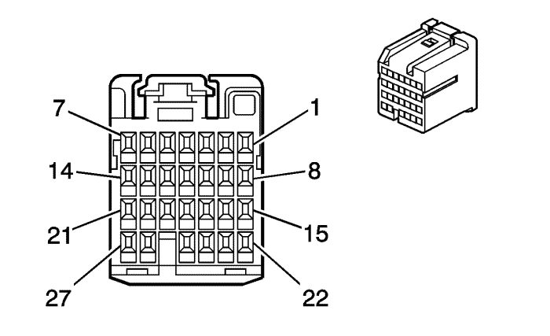

Captiva |
||||||||
|
|
|
|||||||
|
 |
Información de parte de conector
| Información de parte de terminal
|
Bulón | Tamaño | Color | Circuito | Función | Opción |
|---|---|---|---|---|---|
1 | -- | -- | -- | No se utiliza | -- |
2 | 0.35 | WH/BK | 1073 | Señal del resistor de la llave de encendido | -- |
3 | 0.35 | GY | 1884 | Señal del interruptor del control de velocidad | -- |
4 | 0.35 | WH | 530 | Tensión de desconexión/puesta en marcha/arranque | -- |
5 | 0.35 | L-GN | 1715 | Señal alta del interruptor del limpiaparabrisas | -- |
6-7 | -- | -- | -- | No se utiliza | -- |
8 | 0.35 | BN/BK | 6009 | Referencia baja del interruptor del limpiaparabrisas | -- |
9 | 0.35 | L-BU | 1714 | Señal baja del interruptor del limpiaparabrisas | -- |
10-13 | -- | -- | -- | No se utiliza | -- |
14 | 0.35 | PK | 39 | Tensión 1 de encendido, marcha/arranque | -- |
15 | 0.35 | L-BU/WH | 1414 | Señal de interruptor del intermitente delantero izquierdo | -- |
16 | 0.35 | D-BU/WH | 1415 | Señal de interruptor del intermitente delantero derecho | -- |
17 | 0.35 | PK | 1444 | Referencia de 12 voltios | -- |
18 | 0.35 | PU | 524 | Interruptor de atenuación de los faros, luces de carretera | -- |
19 | 0.35 | BN | 2144 | Señal de interruptor de emergencia | -- |
20 | 0.35 | D-GN | 5525 | Señal de activación de subida/bajada | -- |
21 | 0.35 | YE | 43 | Tensión accesoria | -- |
22 | -- | -- | -- | No se utiliza | -- |
23 | 0.35 | L-BU | 553 | Señal de rendimiento del interruptor de selección del cambio | -- |
24 | 0.35 | PK | 94 | Señal de interruptor del lavaparabrisas | -- |
25 | 0.35 | YE | 307 | Señal de ráfagas para adelantar del interruptor de los FAROS | -- |
26 | 0.35 | BN/WH | 816 | Control del solenoide de BTSI | M98 |
27 | -- | -- | -- | No se utiliza | -- |
| © Copyright Chevrolet Europe. All rights reserved |